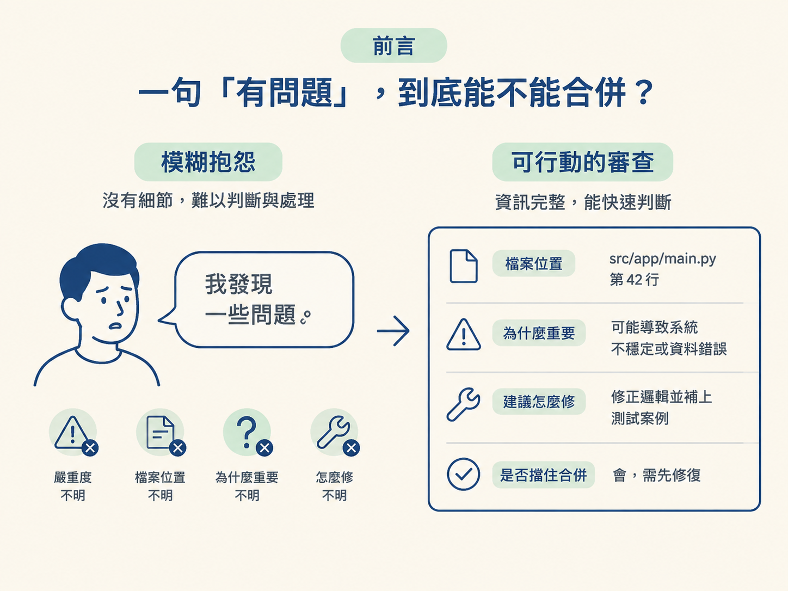
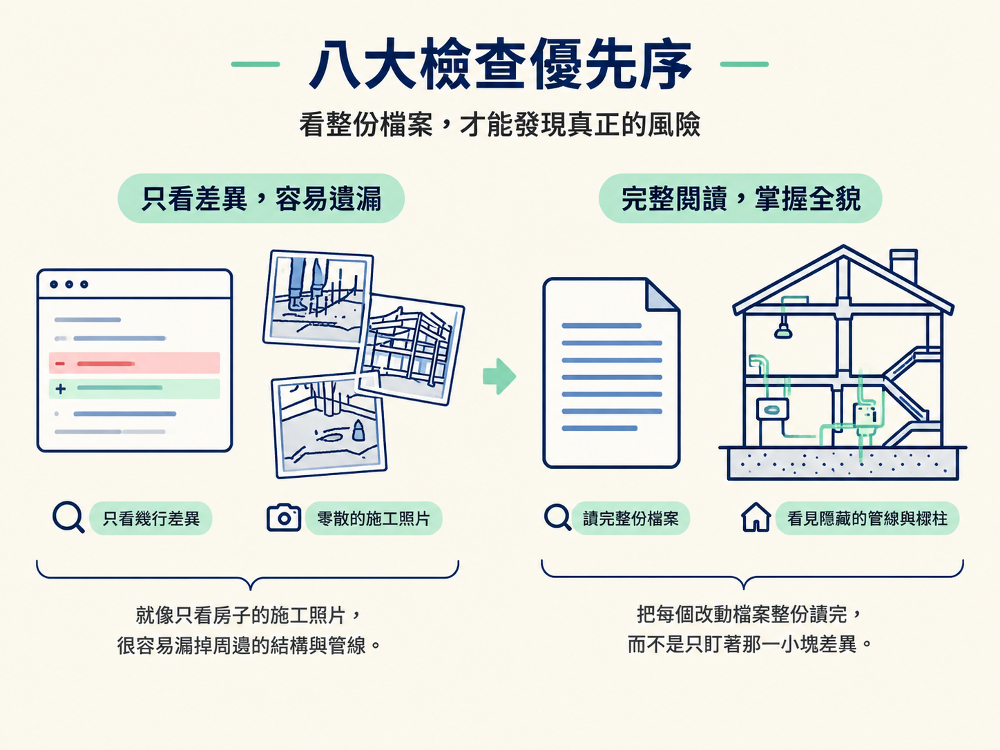
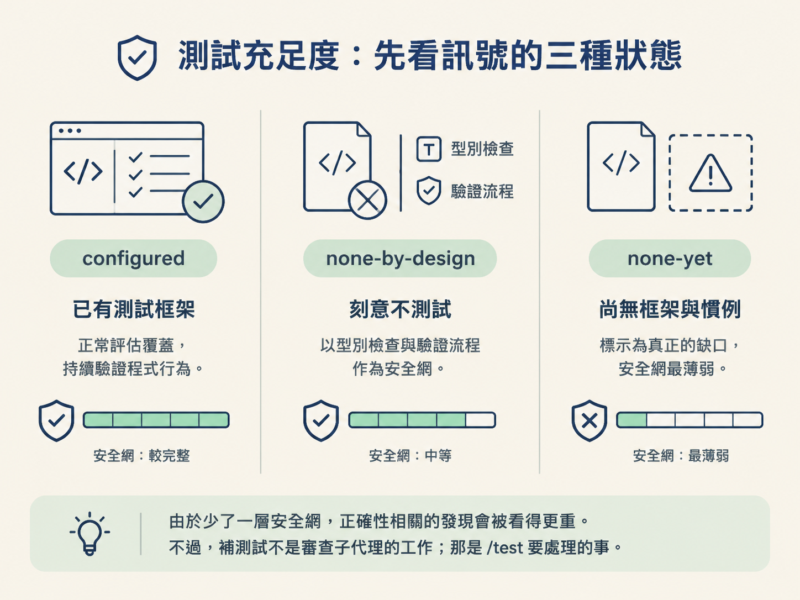

完成這一節後，你要能說清楚審查子代理使用的那把尺：它用什麼心態看程式碼、八大檢查項目如何排序、四級嚴重度怎麼分、四種裁決何時使用、發現檔要怎麼寫，以及測試訊號處於三種狀態時，如何判斷測試是否足夠。
上一節把審查子代理叫起來了。它跑完後回來，只丟下一句：「我發現一些問題。」這時你仍然不知道該立刻停下來修，還是可以先合併再處理。
沒有嚴重度、沒有檔案位置、沒有理由的「有問題」，就像有人只說「車子怪怪的」，卻不告訴你是哪個輪胎漏氣。真正有用的審查，必須說清楚：問題在哪裡、為什麼重要、建議怎麼修，以及它是否會擋住合併。

這一節要看的，就是審查子代理手上的那把尺。它的刻度寫在評分標準裡，可以拆開理解，也可以拿來審查別人的程式碼。
先確定審查子代理的立場。它被設定成一位資深工程師，正在檢查隊友送來的 PR。它的任務是讓這個改動在出貨前變得正確、安全、可維護，不是把程式碼改寫成自己偏好的風格。
這個區別很重要。「這行程式碼會造成 bug」和「我個人比較喜歡另一種寫法」是完全不同等級的意見。如果兩者混在一起，作者就無法判斷哪些問題必須處理，哪些只是可選的建議。
因此，每個發現都必須符合三個條件：
審查也要指出真正做得好的地方。一份從頭到尾只有抱怨的審查並不完整，因為真實的改動通常有些地方是正確的。把值得保留的做法標出來，作者才知道哪些決策不用重做。
最後再劃清界線：審查子代理不修改程式碼，只回報發現。它像驗車員，不是把車直接開進修理廠替你拆引擎。
子代理讀 diff 時，不是想到哪裡就看到哪裡，而是依固定順序逐項檢查。順序本身就是風險排序：越前面的項目，越可能立刻造成傷害。
| 順序 | 檢查面 | 典型問題 |
|---|---|---|
| 1 | 正確性 | 邏輯錯誤、off-by-one、漏處理 null、async/await 用錯、競態、狀態轉移破壞、回傳形狀不符 |
| 2 | 安全性 | 未驗證的輸入、injection、缺少權限檢查、機密寫進程式碼或日誌、越權存取 |
| 3 | 錯誤處理與韌性 | 吞掉錯誤、空的 catch、把內部細節洩漏給使用者、缺少逾時或重試、資源沒有關閉 |
| 4 | 效能與規模 | N+1 查詢、無上限的迴圈或記憶體、應移出熱迴圈的工作、缺少分頁、缺少索引 |
| 5 | API 與合約設計 | 破壞公開介面、命名與專案不一致、抽象洩漏、參數應該收成物件 |
| 6 | 可維護性 | 死碼、應抽出的重複邏輯、函式責任過多、命名不清、魔術數字、只解釋「做什麼」的註解 |
| 7 | 慣例與決策遵循 | 違反 AGENTS.md 規則、與相關規格矛盾；專案規則優先於個人偏好 |
| 8 | 測試是否足夠 | 新增分支邏輯卻沒有對應測試、斷言沒有意義、只測 happy path |
正確性檢查特別容易被看得太表面。要追的不是顯而易見的主流程，而是旁邊那些比較容易藏 bug 的路徑：分支、邊界、失敗情境與非預期輸入。
只看 diff 的幾行，很像只看房子的施工照片就想判斷結構安不安全，周邊脈絡很容易被漏掉。因此，子代理會把每個改動檔案整份讀完，而不是只盯著那一小塊差異。

每個發現都要標上嚴重度。這個標籤不是裝飾，而是用來回答一個實際問題：合併前到底需不需要處理？
| 級別 | 意義 | 對合併的影響 |
|---|---|---|
| 🔴 Blocker | bug、安全漏洞、資料遺失，或合約被破壞，會在正式環境造成錯誤 | 合併前必須修 |
| 🟠 Major | 明顯的正確性、效能或可維護性問題，很快就可能造成影響 | 應該在合併前修 |
| 🟡 Minor | 確實存在，但不急迫，例如漏掉邊界、一點低效或程式碼不清楚 | 儘快修，但不擋合併 |
| ⚪ Nit | 風格、命名或個人偏好 | 由作者自行決定 |
真正困難的不是記住四個名稱，而是分級時要誠實。把小毛病誇大成 Blocker，會很快磨掉團隊對審查的信任；反過來，把真正的 bug 藏在 Nit 裡，則可能讓問題一路進入正式環境。
如果無法確定某件事是否算 bug，評分標準要求子代理直接說「我不確定」，並解釋可能的風險。誠實的不確定，比假裝精準的分級更有用。
把整份審查中最嚴重的發現收攏起來，就能得到最後裁決：
裁決不是總結用的標籤，而是直接對應下一步行動。Approve 或 Approve with nits 可以往合併走；Changes requested 要先修正 Major；Blocked 則必須停下來處理 Blocker。
它也是子代理回傳給母體模型的摘要核心，讓對話一開始就能看到目前能不能合併，而不用先翻完整份報告。
八大檢查的最後一項是測試，但測試也是最容易被審錯的地方。正確做法不是看到「沒有測試」就直接扣分，而是先確認專案的測試訊號，再選擇相應的評估標準。
configured：專案已設定測試框架這種情況要正常評估測試是否跟上改動。新增或修改的邏輯沒有測試，至少算 Minor；如果涉及分支邏輯、錯誤處理或安全性，就要升到 Major。
子代理也會檢查那些看起來有測、實際上測不出東西的測試，例如：
這些都是測試存在但安全網破洞的情況。測試數量多，不代表測試真的有用。
none-by-design：專案刻意不使用測試框架這代表專案已經選擇不使用測試框架，並以型別檢查加上 /check verify 作為驗證關卡。此時子代理不會提出「缺少測試」、「應該增加覆蓋率」或「專案沒有安全網」這類意見。
因為這個專案的安全網就是型別檢查與驗證流程。硬要一個刻意不使用測試套件的專案補測試，只會製造噪音。子代理會改為檢查正確性與安全性，並在風險說明中指出：目前的驗證關卡應該能抓到哪些問題。
none-yet：目前沒有測試，也沒有明確慣例這才是真正的缺口。專案既沒有測試框架，也沒有明確說明為什麼不需要測試。子代理會在裁決層提到一次這個缺口，不會在每個檔案逐一重複。
由於少了一層安全網，正確性相關的發現會被看得更重。不過，補測試不是審查子代理的工作；那是 /test 要處理的事。

所有發現最後會寫進一份 markdown 檔，檔案路徑由上一節的流程決定。固定格式如下：
沒有任何發現的嚴重度分節就直接省略，不留下空的「Blockers」標題。空標題像一個沒有內容的抽屜，只會讓讀者懷疑是不是漏寫。
檔案完成後，子代理只回傳一段固定格式的精簡摘要給母體，內容包含：
它不會把整份 diff 或整份發現檔重新貼回對話。完整內容已經在檔案裡，母體只需要先掌握結論與行動項。
審查子代理是一位正在閱讀隊友 PR 的資深工程師。它的目標是讓改動正確、安全、可維護，而不是改成自己的口味。每個發現都要具體、有理由、可行動；檢查依八大優先序進行，正確性與安全性排在最前面。每個發現都要標上四級嚴重度：Blocker、Major、Minor、Nit，分級時要誠實，不確定就說不確定。整份審查再歸納成四種裁決：Approve、Approve with nits、Changes requested、Blocked。最後，發現寫入固定格式的檔案，子代理只回傳精簡摘要。
到這裡，/check 的兩條腿都清楚了：
verify：真的跑一遍，確認功能會動，也符合規格。review：交給另一個模型檢查驗收流程不一定看得出的品質問題。兩者都不修改程式碼，而是把問題精準送回該處理的那一關。現在就在練習專案上挑一個剛完成的功能，分別跑一次 verify 與 review，最後根據裁決決定能否合併。這樣你就不只是知道「要審查什麼」，而是真的得到一個可以採取行動的合併決定。